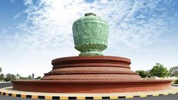

Pursat is a province of Cambodia. It is in the western part of the country and borders clockwise from the north: Battambang province, the Tonlé Sap, Kampong Chhnang province, Kampong Speu province, Koh Kong province, and East Thailand. It lies between the Tonle Sap and the northern end of the Cardamom Mountains. The Pursat River bisects the province, running from the Cardamoms in the west to the Tonle Sap in the east.
The fourth largest province of Cambodia in area, Pursat ranks only 14th in population. The region is accessible by National Highway 5, by boat, rail and by numerous smaller roads. The capital, Pursat town, lies 174 kilometres north west of capital Phnom Penh by road and 106 kilometres south east of Battambang.
Pursat is home to Wat Bakan, considered to be among the oldest active pagodas in Cambodia and revered as one of the most holy sites of Cambodian Buddhism.The province also hosts the annual River Run Race, an event that includes 5 km and 10 km races that generally follow the path of the Pursat River for men and women, including those requiring wheelchairs. Since its inaugural race in 2007, the event has grown to the second largest of its kind in Cambodia
